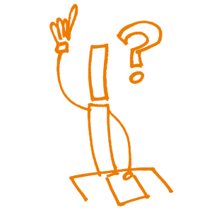

11. Risorse aperte per l’insegnamento e l’apprendimento
Di che cosa si tratta?
Le risorse aperte per l’insegnamento e l’apprendimento (OEC - Open Educational Resources) sono definite come quei “materiali per l’insegnamento, l’apprendimento e la ricerca disponibili in qualsiasi formato - digitale o altro - in regime di pubblico dominio o rilasciati con una licenza aperta che consente l’accesso gratuito, l’uso, l’adattamento e la redistribuzione da parte di altri con nessuna o limitate restrizioni (William and Flora Hewlett Foundation definition). Le risorse aperte per l’insegnamento e l’apprendimento includono corsi completi, materiali di corso, moduli, libri di testo, video in streaming, testi, immagini, software e qualunque altro tipo di strumenti, materiali o tecniche usate per supportare l’accesso alla conoscenza.
Fondamenti
In molti casi, le risorse aperte per l’insegnamento e l’apprendimento sono create sulla base dei risultati della ricerca. Chi pratica la Scienza Aperta dovrebbe coerentemente mantenere lo stesso livello di apertura della ricerca anche per le risorse didattiche. Altri formatori potrebbero inoltre usare il materiale per l’elaborazione di nuove risorse o per adattare quelle esistenti. La creazione di risorse per l’insegnamento e l’apprendimento può essere infatti considerata alla stregua del ciclo di ricerca: trovare, comporre, adattare, usare, e condividere (wikieducator.org/OER_Handbook/educator/OER_Lifecycle).
Risultati dell’apprendimento
- I partecipanti dovrebbero aver imparato la differenza tra le risorse per l’insegnamento e l’apprendimento aperte e quelle non-aperte.
- L’attribuzione della licenza è un aspetto importantissimo poiché indica come usare e combinare facilmente le risorse aperte per l'insegnamento e l'apprendimento.
- I partecipanti dovrebbero aver imparato dove trovare e collocare le proprie risorse aperte per l'insegnamento e l'apprendimento.
Compenenti chiave
Conoscenze e competenze
Le risorse aperte per l’insegnamento e l’apprendimento sono risorse aperte per l'insegnamento e l'apprendimento solo se hanno una licenza aperta. Tuttavia non vi sono linee guida chiare su come scegliere la licenza. Quale tipo di licenza è adeguata? Nella pratica, le licenze più usate per le risorse per l'insegnamento e l'apprendimento sono le Creative Commons (CC). Le licenze aperte Creative Commons che possono essere usate per molte risorse per l’insegnamento e l’apprendimento, sono CC0 (Pubblico dominio internazionale, CC BY (Attribuzione) and CC BY SA Attribuzione - Condividi allo stesso modo). Per la distribuzione di database con licenza libera, Creative Commons non sono la soluzione ideale. Piuttosto si può scegliere una licenza aperta più appropriata come ODbl, ODC-BY o PDDL per conformità con la normativa vigente.
E’ importante rimarcare la necessità di definire chi è il titolare dei diritti d’autore o di ogni altro diritto correlato ai prodotti della ricerca. Il titolare del diritto d'autore è colui che può decidere di revocare le restrizioni qualora non siano state cedute per default attraverso le licenze. Le licenze possono pertanto essere spiegate in dettaglio per l'attribuzione corretta degli autori e creare delle vere risorse aperte. Questo include anche la combinazione di differenti tipi di licenza e i loro effetti.
Durante l'evento di formazione, si potrebbe prevedere una rassegna delle piattaforme esistenti che offrono delle risorse didattiche aperte e dei loro specifici usi.
OpenCourseWare (OCW) è una delle prime piattaforme per le risorse aperte per l’insegnamento e l’apprendimento e fa parte degli strumenti precursori che hanno contraddistinto il movimento per le risorse aperte per l’insegnamento e l’apprendimento.
L’Open Education Consortium, prese le mosse dal Massachusetts Institute of Technology (MIT) nel 2002 e attualmente fornisce materiali didattici da tutto il mondo sotto forma di corsi rilasciati con licenze libere. Altri pionieri furono l’UNESCO e la William and Flora Hewlett Foundation, tutt'ora impegnati nella promozione delle risorse aperte per l’insegnamento e l’apprendimento.
Esempi di piattaforme di risorse per l'insegnamento e l'apprendimento aperte sono:
- Creative Commons Search per file di immagini, audio e video
- Open Education Consortium per materiali didattici aperti
- OERCommons per risorse per l'apprendimento e l'insegnamento

Domande, intoppi ed equivoci comuni
Domanda: Come viene garantita la qualità dei materiali?
Risposta: Non c’è nulla di certo a questo proposito. Ad oggi manca un contrassegno di qualità per i materiali per l'insegnamento e l'apprendimento aperti. Una prima indicazione sulla qualità si può estrapolare dai commenti aperti degli utenti, dalla revisione tra pari e dalla pubblicazione dei materiali sulle piattaforme di istituzioni consolidate, come le università, ad esempio. Proprio come avviene per i materiali stampati, la qualità non può tuttavia essere garantita. Questo può disorientare molti utenti. L'attualità e l’adattabilità dei materiali depone comunque a favore dell’uso di risorse didattiche aperte. Alla fin fine, ognuno può intuire se il materiale selezionato è adeguato agli obiettivi che intende perseguire e se il contenuto è corretto.
Risultati dell’apprendimento
- Chi partecipa alla formazione è in grado di distinguere tra materiale libero e materiale coperto dal diritto d’autore.
- Impara le possibili combinazioni tra i diversi tipi di licenza e i loro effetti.
- E' in grado di trovare, usare e creare risorse aperte per l’insegnamento e l’apprendimento.
Letture integrative
Butcher (2015). A Basic Guide to Open Educational Resources (OER). hdl.handle.net
Miao et al. (2016). Open Educational Resources: Policy, Costs and Transformation. hdl.handle.net
OECD (2007). Giving Knowledge for Free: The Emergence of Open Educational Resources. OECD Publishing, Paris. doi.org/10.1787/9789264032125-en
Open Knowledge Foundation (2014). Open Education Handbook 2014. education.okfn.org